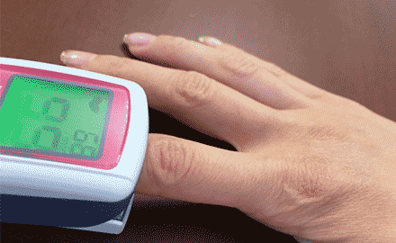

Medical treatment
診察内容
生活習慣病
総合内科専門医の資格を持った医師が
様々な観点から生活習慣病を診療いたします。
様々な観点から生活習慣病を診療いたします。
糖尿病、高血圧症、脂質異常症(高脂血症)、高尿酸血症(痛風)などの生活習慣病の診察・治療を専門医が行います。これらの治療の目的は、動脈硬化を防ぎ、心筋梗塞や脳梗塞などの重篤な病気を予防することです。
健康診断で異常値がある方、異常を指摘された方、治療をしたいけれどなかなか治療に踏み切れなかった方はお気軽にご相談ください。ともに向き合い、元気で明るい生活をサポートします。
健診・人間ドック
健診や人間ドックで指摘された異常値の治療を行います。
異常値が見つかるとショックや不安が大きいですが、うまく治療につなげられるように健診施設と連携して、お一人おひとりに合った治療や予防について提案します。
また、当院でも健診や人間ドックを行っております。
ご希望の方はご相談ください。
ご希望の方はご相談ください。
呼吸器内科
呼吸器内科では、気管支や肺といった呼吸器官の診療を行います。
対象となる病気は、COPD(慢性閉塞性 肺疾患)、気管支喘息、肺炎をはじめ、急性上気道炎、急性気管支炎、慢性気管支炎、気管支拡張症、非結核性抗酸菌症、結核などです。
対象となる病気は、COPD(慢性閉塞性 肺疾患)、気管支喘息、肺炎をはじめ、急性上気道炎、急性気管支炎、慢性気管支炎、気管支拡張症、非結核性抗酸菌症、結核などです。
気管支喘息は、呼吸器内科でもっとも多い病気です。継続的な治療と経過観察が必要ですが、治療が適切であれば発作を抑えることが可能です。
肺がんも呼吸器内科の診療対象です。当院では、検査によって肺がんの疑いがあると思われる患者さまには、地域中核病院(さいたま赤十字病院、自治医科大学さいたま医療センター)などを紹介しています。
肺がんも呼吸器内科の診療対象です。当院では、検査によって肺がんの疑いがあると思われる患者さまには、地域中核病院(さいたま赤十字病院、自治医科大学さいたま医療センター)などを紹介しています。
呼吸器官の病気のほとんどで、咳を伴う症状が現れます。ただし、咳は風邪をひいても出ますから、それだけでは病名を特定できません。重い疾患が疑われる症状として挙げられるのは、咳が3週間以上続く場合です。
ほかに、「胸部レントゲン写真で肺に影があると言われた」「激しく動くと息切れする」「夜や明け方に息をするとヒューヒューと音がすることが多い」「痰が多い」「胸がよく痛む」などの症状がある場合は、当院で問診や検査を受けられることをお勧めします。検査については、院内でレントゲン検査、呼吸器検査を行います。
ほかに、「胸部レントゲン写真で肺に影があると言われた」「激しく動くと息切れする」「夜や明け方に息をするとヒューヒューと音がすることが多い」「痰が多い」「胸がよく痛む」などの症状がある場合は、当院で問診や検査を受けられることをお勧めします。検査については、院内でレントゲン検査、呼吸器検査を行います。
